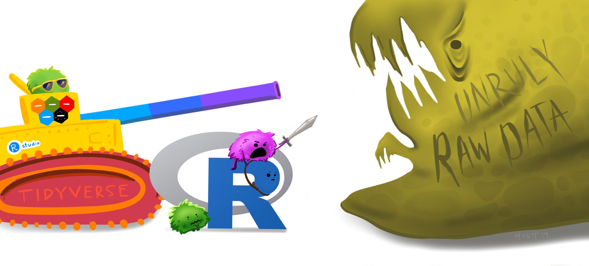

12 Tidy Data and Tidyverse
12.1 Tidy Data
You can represent the same data in many different ways. In almost all cases, the best way to do so is to make sure your data is tidy. In tidy data, each row corresponds to a unique observation, each column is a variable, and each cell contains the value for a particular observation and variable.
The series of illustrations below helps explain the concept of tidy data and why it is useful!
What is tidy data?

Tidy data are like families.

Since you know all sets of tidy data will have the same structure, the same tools can be used across different datasets.

This enables universality with the tools being used, rather than all different people trying to accomplish the same task in different ways.

This makes your own life better by making it easier for automation & iteration across your projects and datasets.

It also makes all other tidy datasets seem more welcoming!


Illustrations from the Openscapes blog Tidy Data for reproducibility, efficiency, and collaboration by Julia Lowndes and Allison Horst.
12.2 Tidyverse
tidyverse is a collection of packages that all “share an underlying design philosophy, grammar, and data structure” of tidy data. The tidyverse packages and functions are the tools you will use to fill your R workbench, and they will help with every step of your workflow.

Updated from Grolemund & Wickham’s classis R4DS schematic, envisioned by Dr. Julia Lowndes for her 2019 useR! keynote talk and illustrated by Allison Horst.
This illustrates the Social/Data Science workflow that the tidyverse suite of packages are designed to help you accomplish:
Import – get data into R
Tidy – clean and format the data
Transform – select variables, create new ones, group and summarize
Visualize – look at the data in different ways
-
Model–answer questions about the data- modeling and statistics are not covered in this course
Communicate – write reproducible research reports
The majority of the remaining course content will build your arsenal with tidyverse tools to help manage unruly raw data, as it will almost certainly be the case that the data you get initially will be very messy and need lots of cleaning and prepping!
Artwork by Horst (2022)
12.3 Investigating Data
One of the first things you should do when working with a new dataset is to actually look at it. This might seem obvious and simple, but it is very important because it allows you to get a sense of what type of wrangling and manipulation you may need to apply to be able to work with that data.
12.3.1 View Full
You can view a data object by using the View() function. To inspect the penguins object you can run View(penguins) or click on the object itself in your RStudio’s global environment panel.
12.3.2 glimpse
Often times datasets are very large and it is impractical to try and comb through the whole file. It would be much more helpful if there was a way to quickly glimpse at your data to get an overall impression of it. There is a very appropriately named function for this: glimpse()!
glimpse(penguins)
#> Rows: 344
#> Columns: 8
#> $ species <fct> Adelie, Adelie, Adelie, Adelie, …
#> $ island <fct> Torgersen, Torgersen, Torgersen,…
#> $ bill_length_mm <dbl> 39.1, 39.5, 40.3, NA, 36.7, 39.3…
#> $ bill_depth_mm <dbl> 18.7, 17.4, 18.0, NA, 19.3, 20.6…
#> $ flipper_length_mm <int> 181, 186, 195, NA, 193, 190, 181…
#> $ body_mass_g <int> 3750, 3800, 3250, NA, 3450, 3650…
#> $ sex <fct> male, female, female, NA, female…
#> $ year <int> 2007, 2007, 2007, 2007, 2007, 20…From this one function alone, you can learn a lot about your data:
The names of the variables (columns), which you also can get with
names().The number of observations (rows, 344) and variables (columns, 8). You can also get this information with the
nrow()andncol()functions.These variables are saved as either “fct” (factors), “dbl” (double-precision), or “int” (integers).
12.3.3 head
glimpse() gives you a high level snapshot of your data, but it can also be useful to look at some actual rows of data. Looking at all of them at once is silly though. You really just want to look at a few observations to see if you can recognize anything that may need to be corrected. The head() function can be used for this. It will print the first few rows of data in the argument you pass it to.
head(penguins)
#> # A tibble: 6 x 8
#> species island bill_length_mm bill_depth_mm
#> <fct> <fct> <dbl> <dbl>
#> 1 Adelie Torgersen 39.1 18.7
#> 2 Adelie Torgersen 39.5 17.4
#> 3 Adelie Torgersen 40.3 18
#> 4 Adelie Torgersen NA NA
#> 5 Adelie Torgersen 36.7 19.3
#> 6 Adelie Torgersen 39.3 20.6
#> # … with 4 more variables: flipper_length_mm <int>,
#> # body_mass_g <int>, sex <fct>, year <int>You can specify the exact amount of rows you want to print by passing a second argument to head() that specifies the number of rows. E.g.,
head(penguins, 10)
#> # A tibble: 10 x 8
#> species island bill_length_mm bill_depth_mm
#> <fct> <fct> <dbl> <dbl>
#> 1 Adelie Torgersen 39.1 18.7
#> 2 Adelie Torgersen 39.5 17.4
#> 3 Adelie Torgersen 40.3 18
#> 4 Adelie Torgersen NA NA
#> 5 Adelie Torgersen 36.7 19.3
#> 6 Adelie Torgersen 39.3 20.6
#> 7 Adelie Torgersen 38.9 17.8
#> 8 Adelie Torgersen 39.2 19.6
#> 9 Adelie Torgersen 34.1 18.1
#> 10 Adelie Torgersen 42 20.2
#> # … with 4 more variables: flipper_length_mm <int>,
#> # body_mass_g <int>, sex <fct>, year <int>